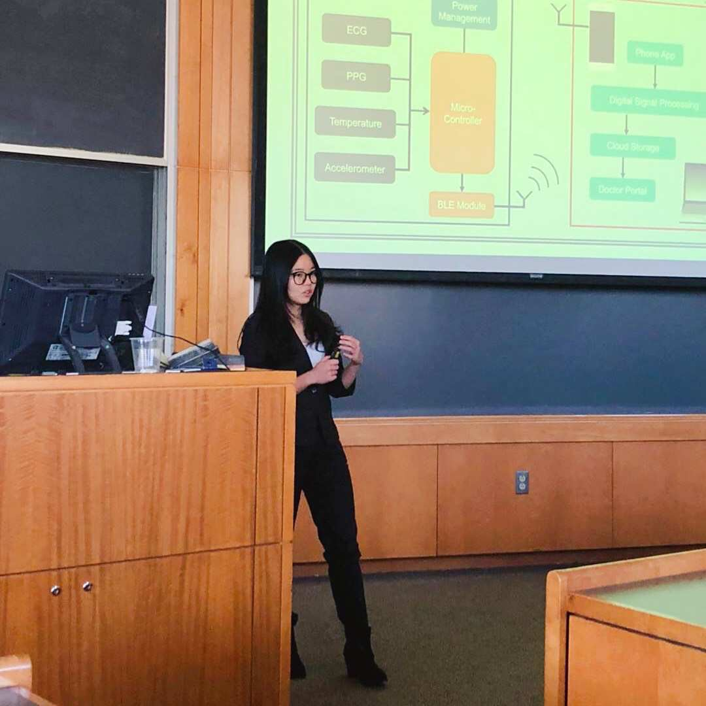

eDRAM-CIM Low Power Compute-in-Memory Design for ML Accelerator
Successfully taped out this project from circuit design, simulation, custom-layout, APR and post-silicon verification(on-going and got accepted to ISSCC 2021.
Designed memory blocks to be used for on-chip machine learning computation using 65nm CMOS process.
Own all digital and analog blocks in the design while optimizing power consumption and throughput.
Worked on behavior model of analog and digital circuits using Verilog AMS and completed mixed signal simulation.
Developed energy model to evaluate the design and used Python to model the circuit performance.
Independent Study: Ultra-Low Power Pressure Ulcer Prevention System
WPI, August 2017 – May 2018
Advisor: Professor John McNeill, Dean of Engineering
Developed a time-based resistance measurement algorithm with error analysis, simulation and verification to save more power and increase the accuracy for the resistive-force sensor system
Modeled non-idealities due to the creep behavior of piezoresistance for the conductor-filled polymer composites
Calibrated resistive-force sensor using MATLAB to bring down the measurement error from 10% to 2%
Advisor: Professor Reinhold Ludwig, Professor and Department Head
Developed a small, accurate, and efficient integrated circuits capable of measuring a variety of vital parameters to create an innovative wearable health monitor on a team of three.
Proposed features to monitor the user’s heartbeat, blood pressure, internal temperature, respiration rate, and galvanic skin response, as well as providing fall detection.
Worked on SPI Communication between microcontroller CC2650 and accelerometer ADXL362, using Code Composer Studio and Analog-to-Digital Converter inside the microcontroller to process ECG heart rate monitor AD8233 analog data.

Get in touch
Actively looking for summer internship
Circuit Research Lab - the University of Texas at Austin
2501 Speedway,
Austin, TX 78712